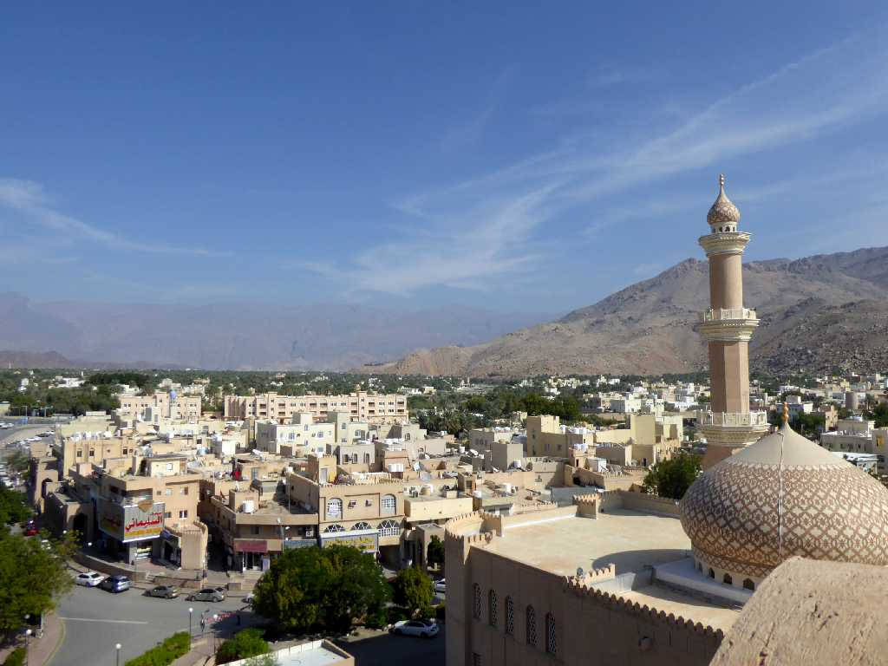
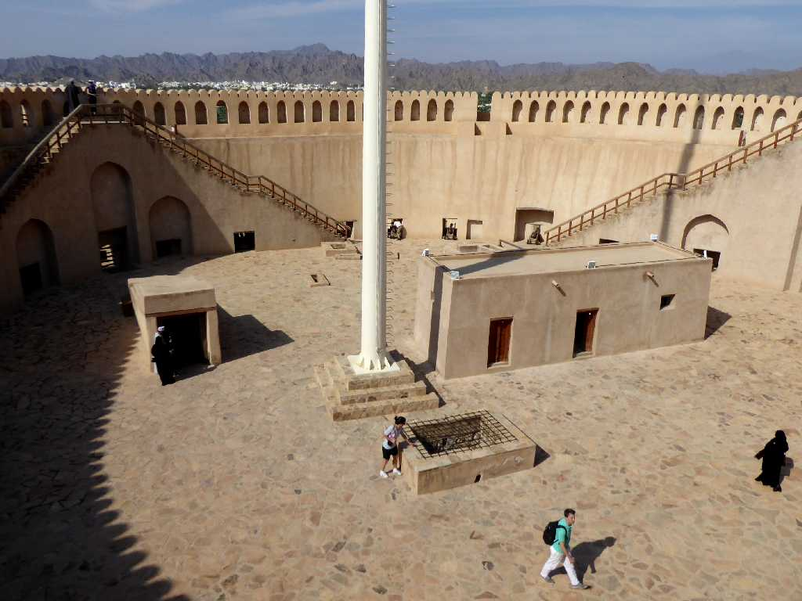
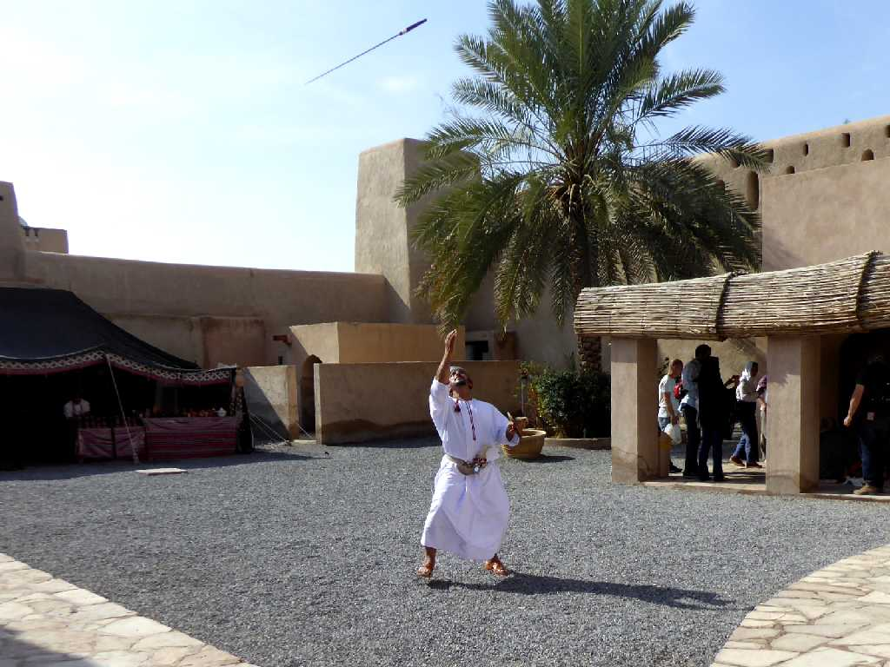
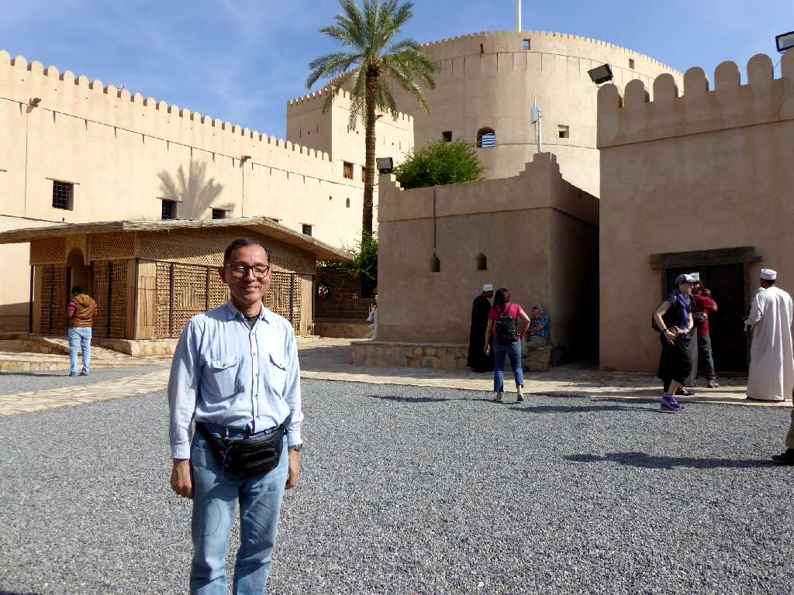

Nizwa from Fort
ハジャル山地の中腹に位置し６世紀から７世紀まではオマーンの首都として１９１３年から１９５９年まではオマーン・イマーム国の首都として栄えたオマーン第二の都市ニズワ
Nizwa Fort
１７世紀にスルタンが建造したニズワ砦の塔は直径４５ｍ高さ３４ｍある

Tower Nizwa Fort

Show Nizwa Fort
ニズワ砦ないの剣術ショー

December 13 2019 Nizwa Fort